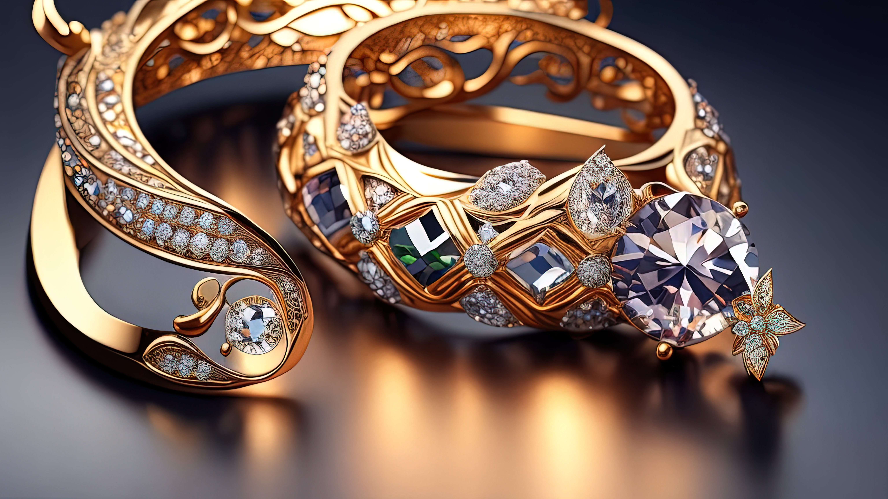

Productos
Todas los que buscas en relojes, joyeria de alta calidad, anillos, pulseras, dijes, gargantillas, accesosios y mas
Calidad y diseño en un mismo lugar. Descubrí tu estilo y armá tu colección ideal de Joyas Kosmos. Productos de Calidad. Baños en oro y plata.
Todas los que buscas en relojes, joyeria de alta calidad, anillos, pulseras, dijes, gargantillas, accesosios y mas

Trabajamos con todas las marcas, entre las que puedes encontrar: Omega, Gucci, Swatch, Mont Blank y mas

En Joyería Kosmos prestamos un servicio post-venta a todas nuestras marcas, así como a todas aquellas que requieran de unas manos profesionales. Disponemos de un taller propio dotado de maquinaria especializada de última tecnología, donde se da mantenimiento necesario a los relojes de las marcas que representamos, como ser: ajustes, pulidos, revisión, cambios de baterías, y en caso de ser necesario, una vez registrado el reloj, será enviado a los servicios técnicos oficiales, para asegurar la utilización de piezas originales y el máximo de garantía.